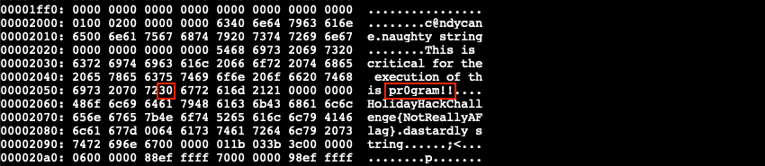
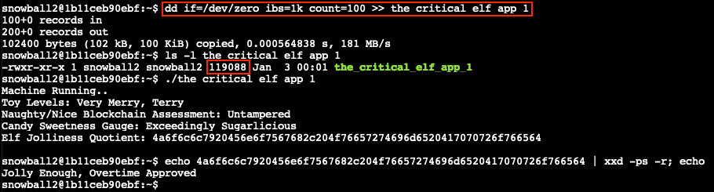

Yara Analysis⚓︎
Elf: Fitzy Shortstack
Direct link: yara terminal
Objective: Splunk!
Request⚓︎
Fitzy Shortstack
Hiya, I'm Fitzy Shortstack!
I was just trying to learn a bit more about YARA with this here Cranberry Pi terminal.
I mean, I'm not saying I'm worried about attack threats from that other con next door, but...
OK. I AM worried. I've been thinking a bit about how malware might bypass YARA rules.
If you can help me solve the issue in this terminal, I'll understand YARA so much better! Would you please check it out so I can learn?
And, I'll tell you what – if you help me with YARA, I'll give you some tips for Splunk!
I think if you make small, innocuous changes to the executable, you can get it to run in spite of the YARA rules.
Solution⚓︎
Welcome message
HELP!!!
This critical application is supposed to tell us the sweetness levels of our candy
manufacturing output (among other important things), but I can't get it to run.
It keeps saying something something yara. Can you take a look and see if you
can help get this application to bypass Sparkle Redberry's Yara scanner?
If we can identify the rule that is triggering, we might be able change the program
to bypass the scanner.
We have some tools on the system that might help us get this application going:
vim, emacs, nano, yara, and xxd
The children will be very disappointed if their candy won't even cause a single cavity.
For a one-liner solution, scroll all the way down to the bottom. 
The goal of this challenge is to modify the the_critical_elf_app binary in such a way that it doesn't trigger any of the YARA rules anymore. Each rule consists of a series of strings and a boolean expression that represents the condition that needs to be met for the rule to match. Start by running ./the_critical_elf_app which prints the message yara_rule_135 ./the_critical_elf_app. We can look up the specifics for this YARA rule in ~/yara_rules/rules.yar.
yara_rule_135 | |
|---|---|
1 2 3 4 5 6 7 8 9 10 11 12 | |
The rule matches because somewhere in the binary there's a candycane string. Create a hex dump of the binary using xxd the_critical_elf_app > the_critical_elf_app.hex and open the file in your favorite editor. Search for candy to find the offending string and change the hex value of one of the letters so the YARA rule doesn't match anymore. In the below example changing 0x61 to 0x40 updates the string to c@ndycane. An ASCII table can help with the ASCII to hex conversion.
Convert the hex dump back to a binary with xxd -r the_critical_elf_app.hex the_critical_elf_app_1 and make it executable using chmod +x the_critical_elf_app_1. Running the updated binary now triggers yara_rule_1056.
yara_rule_1056 | |
|---|---|
1 2 3 4 5 6 7 8 9 10 11 12 13 | |
This time the rule has 2 conditions which both need to match. Open the modified hex dump again and search for both hex strings to determine which one we can safely modify. If a search doesn't find the string you're looking for, trim it down as it might span across multiple lines. {6c 6962 632e 736f 2e36} can't be changed as libc.so.6 is an essential library. {726f 6772 616d 2121} however is fine, regardless of what the ASCII string states. Let's change 0x6f to 0x30, so we get pr0gram!!.

Just like before, use xxd -r the_critical_elf_app.hex the_critical_elf_app_1 to convert the updated hex dump back to a binary. The chmod +x step can be skipped as the_critical_elf_app_1 is already executable and we're merely writing new data into the file. Running ./the_critical_elf_app_1 once more now tells us it matches yara_rule_1732.
yara_rule_1732 | |
|---|---|
1 2 3 4 5 6 7 8 9 10 11 12 13 14 15 16 17 18 19 20 21 22 23 24 25 26 27 28 29 30 31 32 | |
Once again there's a few requirements for the rule to match, one of them being the file needs to be less than 50KB in size. We can get around this by padding the binary with a sufficiently large amount of null bytes or 0x00 read from /dev/zero using the command dd if=/dev/zero ibs=1k count=100 >> the_critical_elf_app_1 which increases the file by 100KB. Executing the padded binary finally gets us past all the YARA rules!

Staying with the theme, the Elf Jolliness Quotient is a hexadecimal string which can be decoded to Jolly Enough, Overtime Approved by using echo 4a6f6c6c7920456e6f7567682c204f76657274696d6520417070726f766564 | xxd -ps -r.
One-liner solution
To solve this with a one-liner we'll modify the data at uint32(1) instead of increasing the file size. uint32() reads data as little-endian integers, so we need to invert 0x02464c45 to 0x454c4602 to match the data at byte offset 1. This byte sequence is part of what identifies a 64-bit ELF binary and typically shouldn't be tampered with. In this case however, changing the last byte with value 0x02 to a non-supported class (e.g., 0x03) still allows the binary to execute.
Each step now edits a series of hex values, meaning we can leverage sed to make those changes on the fly. Below is the one-liner command, split across multiple lines for readability. The final sudo step is required because of how the challenge is set up. Our Bash shell has a pre-execution hook, loaded through /usr/local/bin/.bash-preexec.sh which sends our command to sudo -E /usr/local/bin/pre_execution.sh $1; so it's checked against the YARA rules.
1 2 3 4 5 | |
Response⚓︎
Fitzy Shortstack
Thanks - you figured it out!
Let me tell you what I know about Splunk.
Did you know Splunk recently added support for new data sources including Sysmon for Linux and GitHub Audit Log data?
Between GitHub audit log and webhook event recording, you can monitor all activity in a repository, including common git commands such as git add, git status, and git commit.
You can also see cloned GitHub projects. There's a lot of interesting stuff out there. Did you know there are repositories of code that are Darn Vulnerable?
Sysmon provides a lot of valuable data, but sometimes correlation across data types is still necessary.
Sysmon network events don't reveal the process parent ID for example. Fortunately, we can pivot with a query to investigate process creation events once you get a process ID.
Sometimes Sysmon data collection is awkward. Pipelining multiple commands generates multiple Sysmon events, for example.
Did you know there are multiple versions of the Netcat command that can be used maliciously? nc.openbsd, for example.